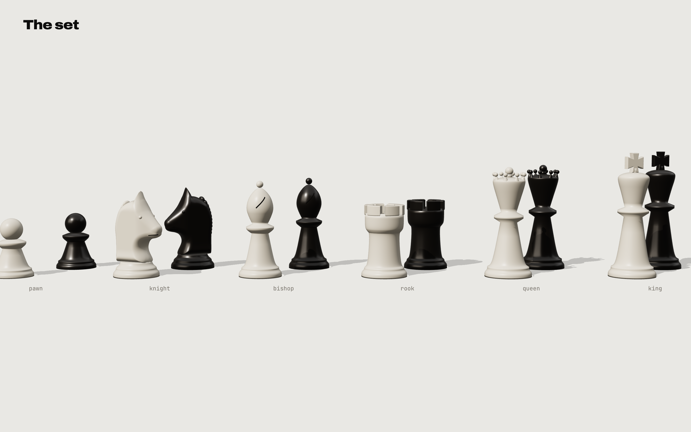
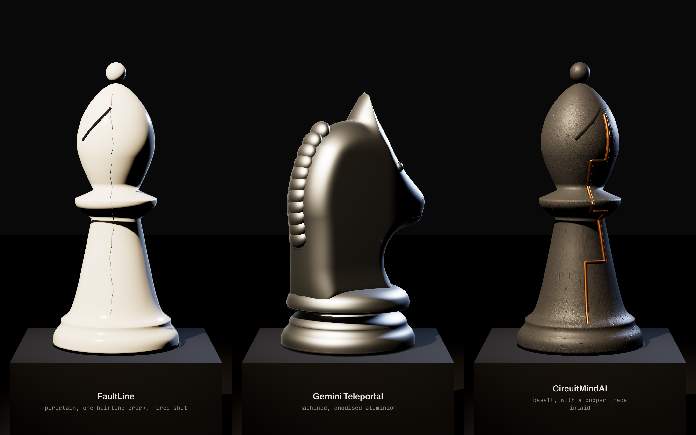
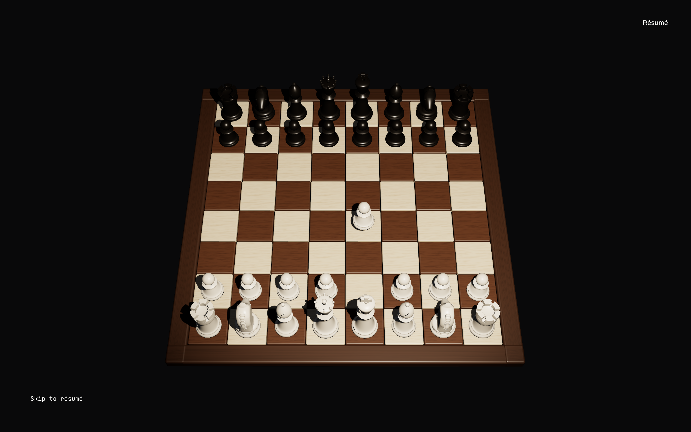
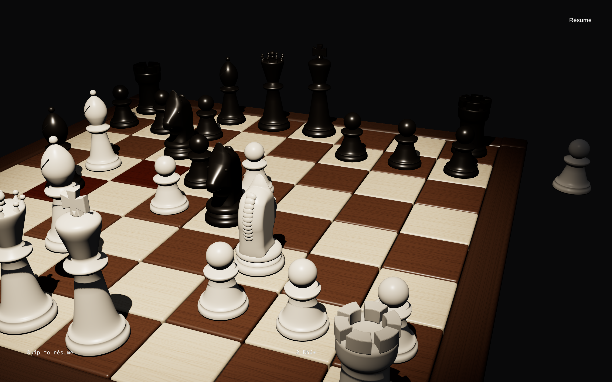
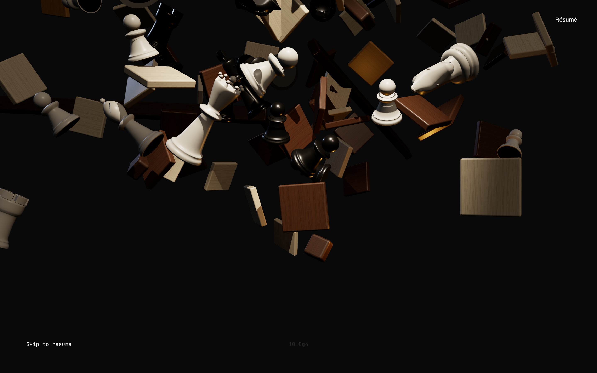
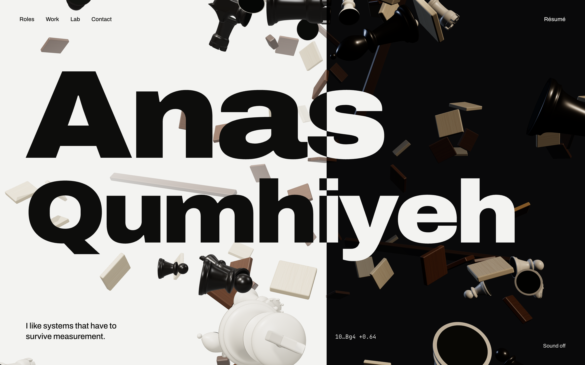
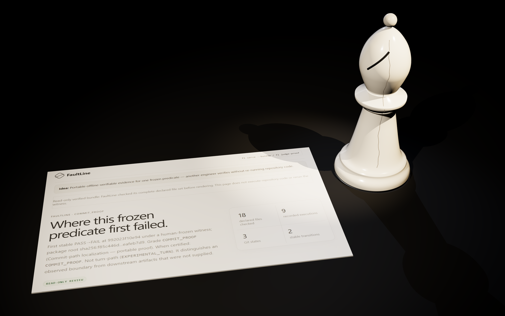
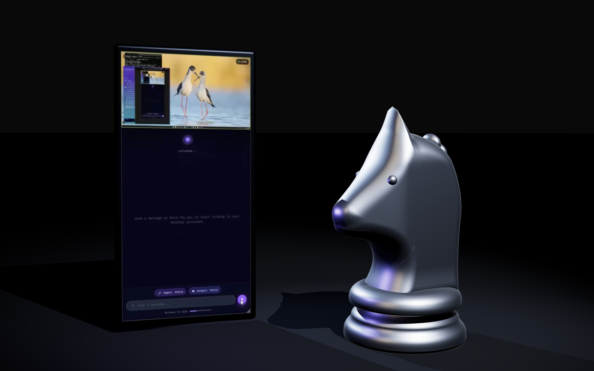
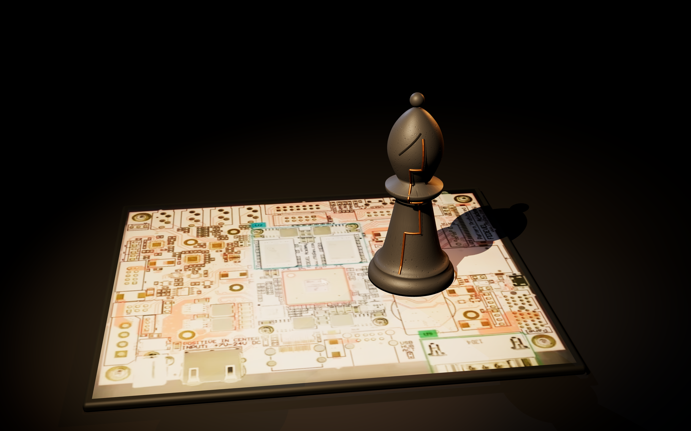

Everything the build needs, rendered as stills for review. All of it is procedural and made for this site: no third-party models, HDRIs or samples. Credits and licences are in design/colophon.md.
Staunton profiles turned from rounded outlines. The knight is a sculpted head with a mane, eyes and a collar. The rook has six bevelled merlons, the queen a coronet, the king a cross pattée, and every piece has a felt pad. Ivory and ebony are lacquered.

Each project's material makes its argument: FaultLine in porcelain with one hairline crack, fired shut; Gemini Teleportal in satin anodised aluminium; CircuitMindAI in pitted basalt with a copper trace. Shown in the gallery environment: a black room with two narrow light strips and a warm softbox.

Maple and walnut squares with a drawn grain, rounded edges and a walnut frame in eight parts. Stills from the approved opening: the start, the tightening game, the blast, and the final hero.




No raw screenshots. Each project's own screenshot becomes an object: FaultLine's proof page as a printed sheet, Teleportal's live session on a phone, CircuitMindAI's inspected board as a plate the bishop stands on. The crops come from the images in content/assets/work/.



| Font | Version | Licence | Checked in |
|---|---|---|---|
| Archivo (variable) | 2.001 | SIL OFL 1.1 | the font's name table; licenses/Archivo-OFL.txt |
| JetBrains Mono | 2.211 | SIL OFL 1.1 | the font's name table; licenses/JetBrainsMono-OFL.txt |
Synthesized by sound/make_sounds.py, AAC. Opt-in: the "Sound off" toggle on every prototype now works. Turning it on replays that page's motion with sound.
| Cue | Used for | |
|---|---|---|
| place | every move played: replays, the opening, stones in Gate C | |
| break | the board detonating | |
| seam | every seam sweep | |
| tick | the contact clock, once a second |